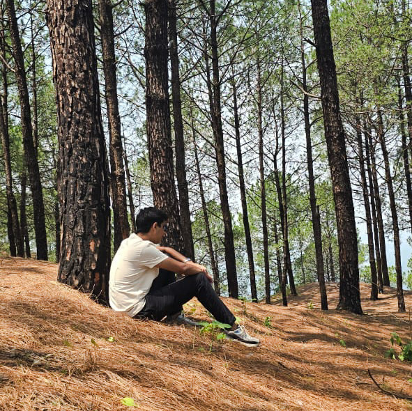

Student | Data Analyst | Web Developer
Currently pursuing MBA Tech DS, passionate about Power BI dashboards, SQL, and full-stack web development.
Learn More ➔Currently studying MBA Tech DS, focusing on data analysis, visualization, and web development. My academic journey has taken me through prestigious institutions that shaped my discipline, creativity, and leadership skills.
Developed interactive executive, customer-product, and continental reports. Focused on clean UI and actionable insights for business decision-making.
Collaborated in ACE 2.0 and TECHNIVERSE hackathons. Built responsive web apps using HTML, CSS, and GitHub Pages, emphasizing teamwork and problem-solving.
Performed exploratory data analysis (EDA) on perfume datasets, identifying trends and recommending products in the ₹600–₹700 range.
Explored cultural hubs across India and beyond, gaining exposure to diverse traditions and lifestyles.